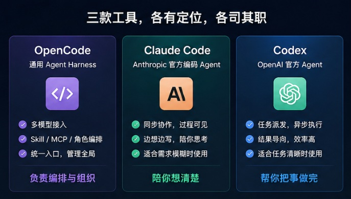
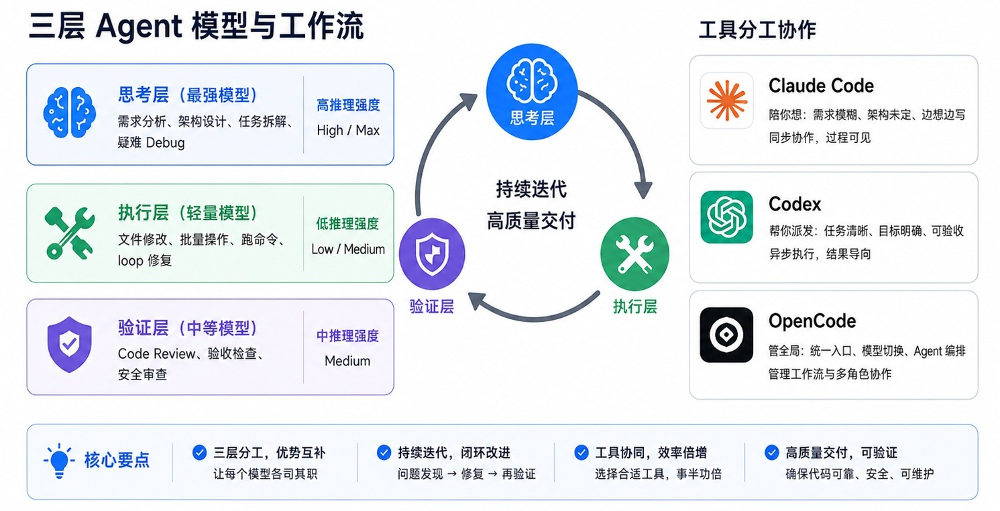
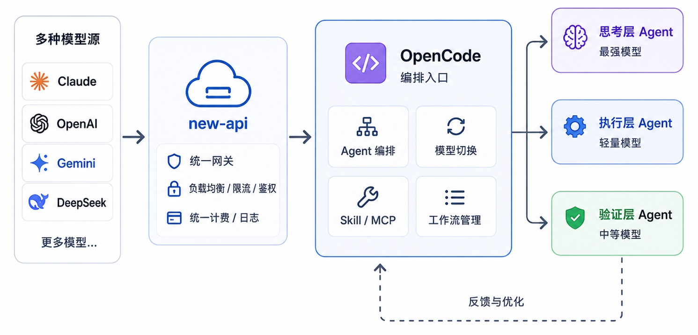
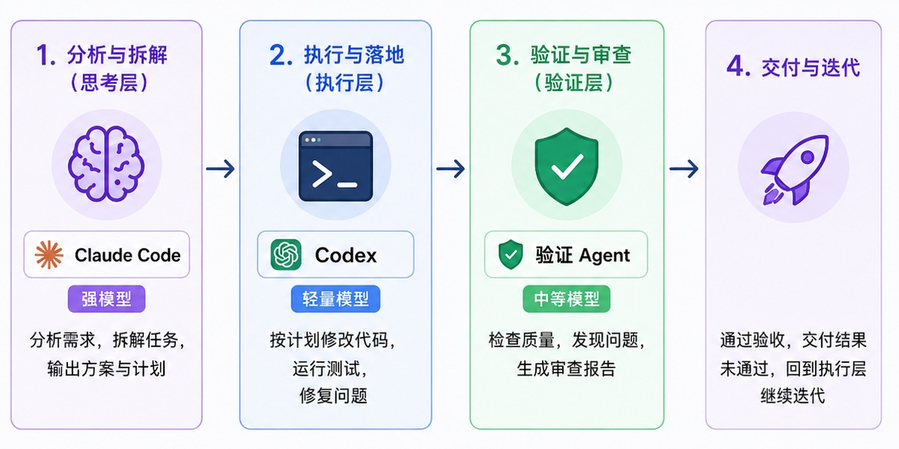

0x00 前言
前面几篇文章已经分别介绍了：
- 《从零开始搭建 AI 环境》：搭建 OpenCode + new-api + cc-switch + Skill
- 《Claude Code 安装配置笔记》：Claude Code 接入 new-api
- 《Codex 安装配置笔记》：Codex 接入 new-api
装完这些工具后，很多人会自然产生一个问题：
OpenCode、Claude Code、Codex 到底该用哪个？
如果把它们当成三个互斥选择，就会越用越乱：今天觉得 Claude Code 编码强，明天又觉得 Codex 包月便宜，后天又发现 OpenCode 可以多模型切换，最后变成手动切来切去。
更合理的理解是：它们不是替代关系，而是分工关系。
Claude Code 和 Codex 更像两种不同的单兵作战工具，前者偏「陪你边想边写」，后者偏「把想清楚的任务派发出去」。
OpenCode 则更像一个 Agent 编排入口，用来管理不同模型、不同角色和不同工作流。
0x10 三者定位
先给结论：
| 工具 | 本质定位 | 默认形态 | 优势 | 短板 |
|---|---|---|---|---|
| OpenCode | 通用 Agent Harness | 编排入口 | 多模型、多 Provider、Skill、MCP、角色编排 | 单模型原生优化不如官方 Agent |
| Claude Code | Anthropic 官方编码 Agent | 同步协作 | Claude 原生编码体验最好，过程可见，适合边想边写 | 模型生态封闭，国内登录受限 |
| Codex | OpenAI 官方 Agent | 任务派发 | 可走 ChatGPT 订阅额度，结果导向，适合清晰任务 | 角色编排能力弱，国内登录受限 |
简而言之：
- OpenCode 管全局：负责统一入口、模型切换、Agent 编排
- Claude Code 陪你想：需求模糊、架构未定、问题没想清楚时，用它同步协作
- Codex 帮你派发：任务清晰、目标明确、可以验收时，用它异步推进或消耗订阅额度
这三个工具并不是「只能选一个」。真正高效的用法，是让它们接入同一个 new-api，然后按任务分工使用。

0x20 任务清晰度决定工具选择
在《两种最强大的 Agent：用 Codex 还是 Claude Code》中有一个判断非常准确：任务越定义清楚，Codex 越好用；任务越模糊，Claude Code 越好用。
这句话比「哪个模型更强」更重要。
因为 Agent 工具真正改变的不是某一次代码生成，而是你和 AI 协作的方式。
Codex 更像结果导向的派发系统：你定义目标，它返回结果。
Claude Code 更像过程导向的协作系统：你能看见它怎么想、怎么改、怎么一步步推进。
前者训练你把任务讲清楚，后者训练你把问题想清楚。
0x21 Codex：想清楚后派发
Codex 的默认形态更像任务派发。
你把需求描述清楚，它启动环境，修改代码，跑测试，最后把结果交回来。
这个过程很像把任务交给一个虚拟工程师，它适合：
- bug 有稳定复现步骤
- 需求边界明确
- 验收标准清楚
- 改动范围可控
- 你不需要盯着每一步过程
这种模式的好处是吞吐量高。你可以把几个清晰任务派出去，自己去处理别的事。
但它的前提是：你真的想清楚了。
如果任务本身是模糊的，Codex 很可能会沿着一个看似合理但其实偏掉的方向一路做完。
0x22 Claude Code：没想清楚时陪你想
Claude Code 的默认形态更像同步协作。
它就在终端里，过程可见，可以被打断，可以先进入 plan mode 看方案，也可以通过 hooks 在关键动作前后插入自己的逻辑。
它适合：
- 需求还没完全想清楚
- 架构需要边讨论边调整
- bug 根因不明确
- 改动风险较高
- 你希望保留对代码过程的所有权感
这种模式的价值不是「更快写完」，而是让你和模型一起把模糊问题变清晰。
0x23 OpenCode：把两种模式组织起来
如果只看 Claude Code 和 Codex，很容易陷入二选一。
但真实工作并不是单一形态。一个项目里既有「已经想清楚，可以派发」的部分，也有「还没想清楚，需要边做边想」的部分。
OpenCode 的价值就在这里：它不站队某一家模型，而是把不同工具、不同模型、不同角色组织起来。
- 模糊任务： Claude Code / 强模型协助澄清
- 清晰任务： Codex / 执行 Agent 派发落地
- 最终产出： 验证 Agent 做质量把关
0x30 为什么需要 Agent 分工
很多人刚开始用 Agent，会犯一个错误：所有任务都交给最强模型。
比如写一个简单脚本，也用最贵的 Claude Opus / GPT-5.5 Max；批量改几十个文件，也让强模型一边深度推理一边机械替换；最后账单飙升，但质量并不一定更高。
AI Agent 的成本不是只看模型单价，而是看 Token 流向是否合理。
实际工作里，任务大致可以拆成三类：
| 阶段 | 特征 | 适合模型 |
|---|---|---|
| 想方向 | 需求模糊、路径不确定、错误代价高 | 最强模型 |
| 干体力活 | 目标明确、重复操作多、错误可修 | 轻量模型 |
| 查质量 | 判断是否达标、发现遗漏、打回返工 | 中等模型 |
所以最佳实践不是「全程上最贵模型」，而是：
- 大模型负责想清楚方向
- 小模型负责把活干完
- 验证模型负责把关收尾
0x40 三层 Agent 模型
可以把一套 Agent 工作流拆成三层。
| 角色层 | 职责 | 模型策略 | 推理强度 |
|---|---|---|---|
| 思考层 | 需求分析、架构设计、任务拆解、疑难 Debug | 最强模型 | High / Max |
| 执行层 | 文件修改、批量操作、跑命令、loop 修复 | 轻量模型 | Low / Medium |
| 验证层 | Code Review、验收标准检查、安全审查 | 中等模型 | Medium |

0x41 思考层
思考层的核心任务是做决策。
比如：
- 需求到底是什么
- 哪些文件需要改
- 有没有更低风险的实现路径
- 当前 bug 的根因在哪里
- 改动会不会破坏已有架构
这类任务最怕方向错。方向错了，后面执行层再便宜也没用，因为所有 Token 都在错误路径上燃烧。
因此思考层应该使用最强模型，并尽量提高推理强度。
0x42 执行层
执行层的核心任务是把方案落地。
比如：
- 根据方案修改代码
- 批量替换命名
- 跑测试、修 lint
- 按固定格式生成文件
- 在 loop 里反复执行「改代码 -> 跑命令 -> 修错误」
这些任务不需要每一步都深度推理。只要前面思考层给的方案足够清楚，执行层就应该用更便宜、更快的模型。
0x43 验证层
验证层的核心任务是减少人工介入。
很多人使用 Agent 的真实痛点不是它不会写，而是它写完之后还要人一行行检查。
如果每一轮输出都要人工审，Agent 就变成了一个很贵的实习生。更好的方式是让验证 Agent 先审一遍：
- 功能是否满足需求
- 测试是否真的跑过
- 是否引入安全问题
- 是否违反项目风格
- 是否遗漏边界条件
验证 Agent 只审查，不直接改。发现问题后，把问题清单打回执行层，让执行层继续修，形成内循环。
0x50 编排能力配置
这里有一个关键点：Claude Code 和 Codex 本身并不适合做三层编排。
它们的配置文件主要解决的是「连接哪个后端」、「默认用哪个模型」。
这些配置只能让 Claude Code / Codex 接入 new-api，不能让它们自动变成「思考 Agent、执行 Agent、验证 Agent」三个角色。
真正适合做编排的是 OpenCode，尤其是配合 oh-my-openagent 后。
OpenCode 是 Harness，负责把多个模型、多个角色、多个工具组织起来。Claude Code 和 Codex 则更适合作为某个高价值角色的能力来源。
0x51 配置方法
OpenCode 的优势是可以通过 Provider 配置接入不同模型。
例如我当前的 opencode.json 所配置的 Provider 主要有 5 类（这些 Provider 均接入了 new-api 以方便调度）：
| Provider | 模型 | 计费/来源 | 适合用途 |
|---|---|---|---|
codex |
gpt-5.5 |
ChatGPT 订阅 | 核心编码、视觉前端、复杂任务执行 |
copilot-anthropic |
claude-haiku-4.5、claude-sonnet-4.5、claude-sonnet-4.6 |
Copilot 包月 | Claude 系包月调用，适合高频编码 |
copilot-google |
gemini-2.5-pro、gemini-3-flash-preview、gemini-3.1-pro-preview |
Copilot 包月 | 长上下文、视觉、多模态辅助 |
copilot-openai |
gpt-4.1、gpt-4o、gpt-5-mini |
Copilot 包月 | 通用问答、轻量视觉、低成本 GPT 调用 |
deepseek |
deepseek-v4-flash、deepseek-v4-pro |
DeepSeek 订阅 | 日常执行、搜索、规划、审查 |
可以看到，OpenCode 这里不是只支持某一家模型，而是把 Claude、GPT、Gemini、DeepSeek 都接进了同一个工作台。

而在 oh-my-openagent.json 编排层面，不需要把所有备用通道都用上，只保留稳定、常用、互补的 Provider 即可。
核心思路是：思考层、执行层、验证层尽量不要全压在同一个模型家族上，例如：
{
"agents": {
"sisyphus": {
"model": "codex/gpt-5.5"
},
"prometheus": {
"model": "deepseek/deepseek-v4-pro"
},
"oracle": {
"model": "copilot-anthropic/claude-sonnet-4.6"
},
"momus": {
"model": "copilot-anthropic/claude-sonnet-4.6"
},
"metis": {
"model": "deepseek/deepseek-v4-pro"
},
"hephaestus": {
"model": "codex/gpt-5.5"
},
"atlas": {
"model": "codex/gpt-5.5"
},
"librarian": {
"model": "deepseek/deepseek-v4-flash"
},
"explore": {
"model": "deepseek/deepseek-v4-flash"
},
"sisyphus-junior": {
"model": "deepseek/deepseek-v4-flash"
},
"multimodal-looker": {
"model": "copilot-google/gemini-3.1-pro-preview"
}
},
"categories": {
"quick": {
"model": "deepseek/deepseek-v4-flash"
},
"unspecified-low": {
"model": "deepseek/deepseek-v4-flash"
},
"unspecified-high": {
"model": "deepseek/deepseek-v4-pro"
},
"deep": {
"model": "copilot-anthropic/claude-sonnet-4.6"
},
"ultrabrain": {
"model": "codex/gpt-5.5"
},
"visual-engineering": {
"model": "codex/gpt-5.5"
},
"writing": {
"model": "copilot-openai/gpt-5-mini"
},
"artistry": {
"model": "copilot-google/gemini-3.1-pro-preview"
}
}
}对应关系如下：
| 角色 | 推荐模型 | 所在层 | 说明 |
|---|---|---|---|
sisyphus |
codex/gpt-5.5 |
思考层 | 主协调者，理解意图、拆任务、分配角色 |
prometheus |
deepseek-v4-pro |
思考层 | 需求不清晰时先规划方案 |
oracle |
claude-sonnet-4.6 |
思考层 | 架构分析、疑难 Debug，作为 Claude 视角的高质量顾问 |
metis |
deepseek-v4-pro |
思考层 | 预判需求歧义、识别隐藏风险 |
momus |
claude-sonnet-4.6 |
验证层 | 计划审查、质量把关、打回返工，避免和执行模型同源 |
hephaestus |
codex/gpt-5.5 |
执行层 | 核心编码，优先消耗 ChatGPT 订阅额度 |
atlas |
codex/gpt-5.5 |
执行层 | 前端、视觉、多模态工程任务 |
librarian |
deepseek-v4-flash |
执行层 | 查资料、读文档、轻量搜索 |
explore |
deepseek-v4-flash |
执行层 | 扫代码结构、找引用、定位文件 |
sisyphus-junior |
deepseek-v4-flash |
执行层 | 批量修改、简单 loop、低风险执行 |
multimodal-looker |
gemini-3.1-pro-preview |
执行层 | 图片、PDF、截图等多模态信息抽取 |
这份配置的重点不是模型名本身，而是角色和模型能力匹配：
- 主协调和高难推理角色，用 GPT / Claude 这类强模型
- 负责搜索和执行的角色，用更便宜模型
- 负责核心编码的角色，可以优先走 Codex 的订阅额度
- 负责验证和审查的角色，尽量和执行层使用不同模型或不同模型家族
实际配置时，openagent 可以输入方法论让 AI 帮忙配置，AI 更清楚哪些 Agent 应该用哪个大模型
0x52 验证层怎么做
验证层不一定非要固定成某个内置角色，也可以作为工作流规则存在。
本文建议是：执行层和验证层最好使用不同模型。
原因很简单，同一个模型在执行阶段犯过的盲点，在验证阶段也容易继续漏掉。尤其是代码风格、边界条件、安全风险、需求遗漏这类问题，如果执行和审查都交给同一个模型，很容易形成「自己证明自己正确」的闭环。
更稳妥的搭配是：
| 执行层 | 验证层 | 适合场景 |
|---|---|---|
deepseek-v4-flash |
deepseek-v4-pro |
低成本执行 + 同家族加强审查 |
deepseek-v4-flash |
claude-sonnet-4.6 |
批量修改后做 Claude 代码审查 |
codex/gpt-5.5 |
claude-sonnet-4.6 / deepseek-v4-pro |
GPT 执行，Claude / DeepSeek 交叉验证 |
claude-sonnet-4.6 |
codex/gpt-5.5 / gemini-3.1-pro-preview |
Claude 编码后，让 GPT / Gemini 从另一种视角审查 |
如果预算有限，执行层和验证层可以共用同一个 Provider，但至少要拆成两个角色：执行 Agent 允许改文件，验证 Agent 只读需求、diff 和测试结果。模型可以便宜，权限边界不能混。
最简单的方式，是让 OpenCode 在完成任务后追加一次验证提示：
请作为独立验证 Agent 审查刚才的产出。
只审查，不修改。
检查以下内容：
1. 是否满足原始需求
2. 是否存在明显 bug
3. 是否遗漏边界条件
4. 是否存在安全风险
5. 是否需要补充测试
如果不达标，请输出问题清单和打回建议。
如果达标，请输出验收结论。如果希望验证更强，可以单独打开 Claude Code 或 Codex，让它只做审查：
你现在只负责代码审查，不要修改文件。
请根据原始需求和当前 git diff，判断产出是否达标。
如果不达标，请给出必须返工的问题清单。这样做的好处是把人从内循环里解放出来：
执行 Agent 产出
│
▼
验证 Agent 审查
├── 通过 → 人只看最终结果
└── 不通过 → 打回执行 Agent 修复人工不再每一步都盯着，只在验证 Agent 也判断不清、或者涉及关键业务决策时介入。
0x60 最佳实践
我个人更推荐这样的组合：
| 场景 | 入口 | 推荐原因 |
|---|---|---|
| 日常问答、资料整理 | OpenCode | 多模型切换方便，成本可控 |
| 简单代码修改 | OpenCode + 轻量模型 | 不需要强模型深度推理 |
| 复杂需求拆解 | OpenCode + sisyphus / prometheus | 先做任务拆解和方案设计 |
| 需求还没想清楚 | Claude Code | 同步协作、过程可见，适合边想边写 |
| 任务已经想清楚 | Codex | 结果导向，适合派发和验收 |
| 疑难 bug / 架构问题 | Claude Code | 原生 Claude 编码理解强，适合攻坚 |
| 核心编码任务 | hephaestus / Codex | 可利用 ChatGPT 订阅额度 |
| 最终审查 | Claude Code / Codex 独立会话 | 只审不改，降低漏检 |
简单来说就是：没想清楚时用 Claude Code 陪你想，想清楚后用 Codex 派发执行，OpenCode 负责把这一切编排成工作流。

0xF0 FAQ
0xF1 为什么不直接全程用 Claude Code
Claude Code 编码强，但它不是多模型编排平台。所有任务都用它做，成本和额度压力都会更高，而且不适合管理多 Provider、多模型、多 Skill 的长期工作流。
它适合作为复杂编码任务的尖刀，而不是所有任务的唯一入口。
0xF2 为什么不直接全程用 Codex
Codex 的优势是可以走 ChatGPT 订阅额度，但它同样不是多角色编排平台。
如果你只是想让 GPT 帮你写代码，Codex 很好；但如果你希望 DeepSeek、Claude、GPT、Gemini 按不同任务自动分工，就需要 OpenCode 这种 Harness。
0xF3 为什么 OpenCode 是编排层
因为 OpenCode 不绑定某一个模型供应商，可以同时接入 new-api、Skill、MCP、oh-my-openagent。它的价值不是某一个模型最强，而是把不同能力组织成工作流。
0xF4 三层模型是不是一定要严格执行
不需要。
简单任务直接用轻量模型即可；中等任务可以思考层和执行层合并；只有复杂任务、长周期任务、多人协作式任务，才有必要显式拆成三层。
原则不是形式主义，而是让 Token 花在最有价值的位置。